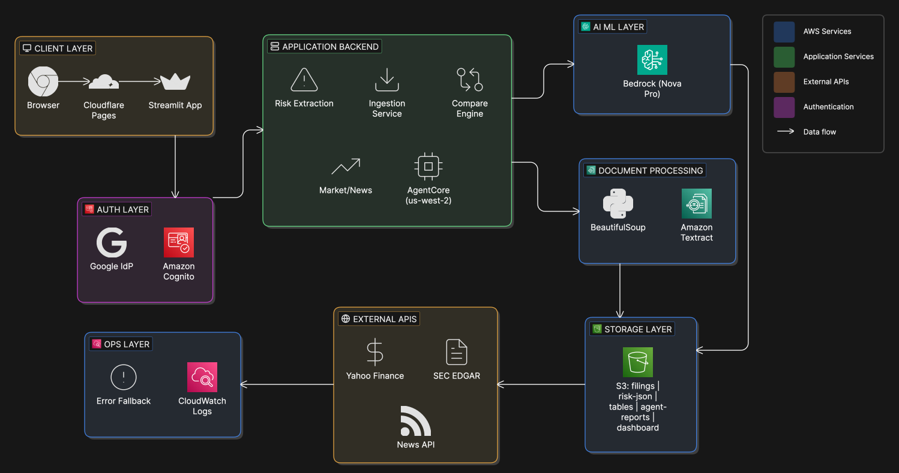

RiskLens Docs
API Architecture
This page summarizes the current production flow from unified chat input to tool routing, extraction, storage, and analytical delivery.
Input Layer
Global chat composer + optional file attachment
Intent Router
general_chat / risk / compare / stock / news
Tool Execution
Upload, extraction, compare, market/news retrieval
Model + Memory
Bedrock model response + AgentCore orchestration + multi-turn conversation context
Persistence & Delivery
S3/records sync + dashboard + in-chat structured output
System Architecture
End-to-end architecture view including routing policy, tool chain, and response contracts.

Diagram file not found at `landing-page/assets/architecture/system-architecture-cropped.svg`
Tip: Keep this page synced with deployment regions, Cognito auth flow, Bedrock model settings, and external data-provider dependencies.